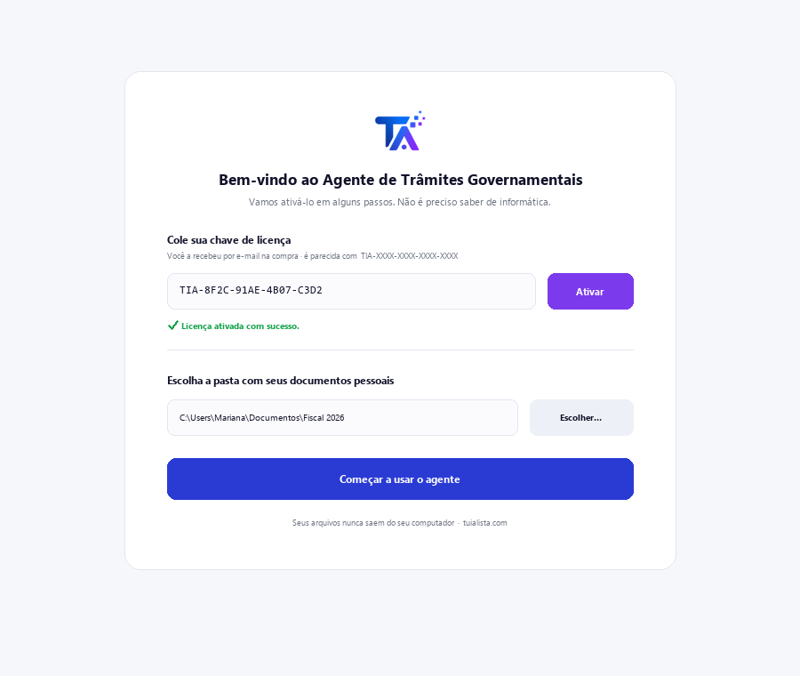
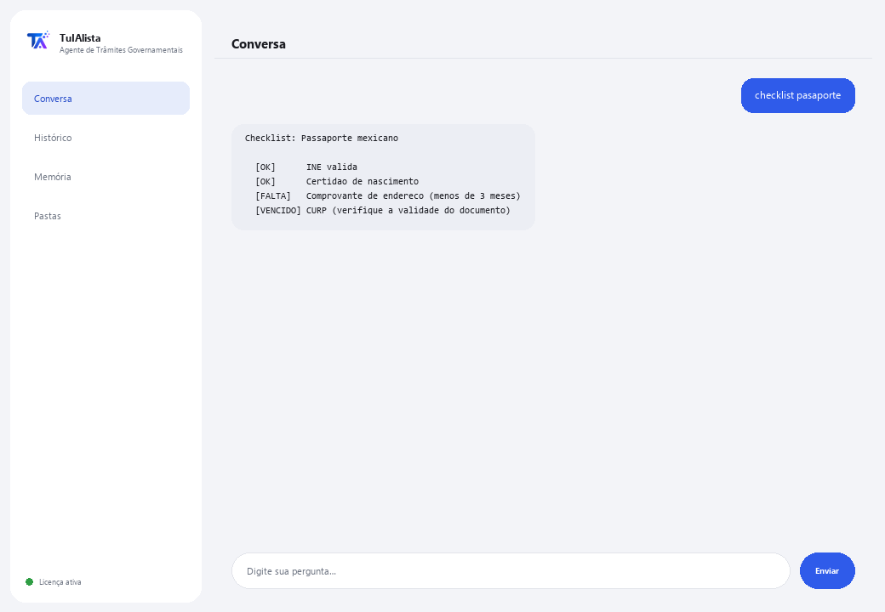

Agente de Trâmites Governamentais
Guia você passo a passo em trâmites mexicanos e diz quais documentos você tem e quais estão faltando.
O que resolve e o que você precisa?
Um trâmite mal preparado significa tempo perdido, filas, recusas e às vezes multas. Este agente organiza seus documentos pessoais, monta o checklist do que você já tem e do que falta, e te prepara antes de ir ao órgão.
- Você precisa: sua chave de licença (TIA-XXXX-XXXX-XXXX-XXXX) e a pasta com seus documentos pessoais. Nada de Python nem conhecimento técnico.
- Primeiro resultado em menos de 5 minutos: instala, ativa, escolhe sua pasta e roda documentos para ver o que foi classificado.
- Seus documentos nunca saem do seu computador — a classificação roda localmente.
soporte@tuialista.com ou acesse tuialista.com/soporte — normalmente respondemos no mesmo dia útil.1 O que este agente faz
Você aponta para a pasta com seus documentos (identidades, comprovantes, certidões, comprovantes) e ele:
- Lê e classifica por tipo (título de eleitor mexicano, CURP, RFC, comprovante de endereço, certidão de nascimento, etc.).
- Gera um checklist do trâmite: quais requisitos você já tem e quais faltam.
- Detecta documentos prestes a vencer ou vencidos (por exemplo, um comprovante de endereço com mais de 3 meses).
- Produz um guia passo a passo do trâmite (órgão, requisitos, se pode ser feito on-line, custos e prazos aproximados).
- Responde suas perguntas: “o que preciso para renovar meu passaporte?”
O resultado: você chega ao trâmite com tudo em ordem e sem surpresas.
2 Instalação (2 minutos)
Para Windows. Não precisa de internet o tempo todo nem enviar nada para a nuvem.
Baixe o instalador em tuialista.com/descargar (agente Trâmites) e abra-o. Ele cria um atalho na sua área de trabalho com o logo — não precisa de Python nem terminal.
Dê duplo clique no novo ícone. Cole sua chave de licença (você a recebeu por e-mail na compra) e clique em Ativar. Você verá um check verde quando for válida.
Selecione a pasta com seus documentos pessoais e clique em Começar a usar o agente. Na próxima vez ele abre direto — lembra sua chave e sua pasta.

3 Como usar
O agente abre uma janela de chat, como um app de mensagens — não é uma tela preta de programador. Você escreve seu comando ou pergunta na caixa de texto abaixo, clica em Enviar (ou Enter), e a resposta aparece como uma mensagem, igual nesta imagem real:

Os comandos a seguir são as palavras que você pode escrever nessa mesma caixa de texto:
> documentosResumo dos seus documentos, o tipo detectado e o status (válido / a vencer / vencido).
> checklist <trâmite>Para um trâmite (ex. pasaporte, ine, rfc), quais requisitos você já tem (e se algum está vencido) e quais faltam.
> guia <trâmite>Guia completo: órgão, documentos, se pode ser feito on-line, passos, dicas para evitar recusas, custos e prazos aproximados.
> falta <trâmite>Só o que falta para esse trâmite, e se você tem algo vencido.
> vencimientosDocumentos prestes a vencer ou vencidos.
> tramitesCatálogo de trâmites que o agente conhece (passaporte, título de eleitor, RFC, CURP, carteira de motorista, previdência, certidão de nascimento, certificado fiscal, assinatura eletrônica...).
> pergunta livre?Escreva qualquer dúvida em linguagem natural, ex.: posso tirar meu CURP on-line?
> sairEncerra a sessão (exit também funciona).
4 Exemplos de uso comum
Se preparar para o passaporte
checklist pasaporte → falta pasaporte — você vê quais requisitos tem e o que falta antes de marcar um horário.
Guia completo de um trâmite
guia acta
Revisar documentos a vencer
vencimientos — você detecta se seu comprovante de endereço já não serve por causa da idade.
Uma dúvida pontual
o que preciso para me inscrever no RFC?
5 Perguntas frequentes
Meus documentos são enviados para a internet?
Quais formatos ele aceita?
Ele realiza o trâmite por mim ou agenda?
Ele gera documentos oficiais?
Como ele classifica meus documentos?
A informação sobre trâmites está sempre atualizada?
Em que idioma ele responde?
Ele lê um PDF escaneado?
Posso mudar a pasta?
É informação oficial do governo?
6 Solução de problemas
Não lê um .pdf ou .docx
Um trâmite não aparece
Mostra “0 documentos indexados”
Diz “Licença inválida” ou pede para reconectar
“Nenhum provedor de IA configurado”
Nenhuma dessas soluções resolveu seu problema? Escreva para nós diretamente — teremos prazer em revisar com você.
soporte@tuialista.com ou acesse tuialista.com/soporte — normalmente respondemos no mesmo dia útil.7 Privacidade e confidencialidade
Seus documentos pessoais nunca saem do seu computador.
- O agente lê e classifica os arquivos localmente, no seu próprio computador. Não os envia para nenhum servidor nem os compartilha com nenhum órgão.
- A classificação, o checklist e a detecção de vencimentos acontecem no seu computador.
- A única coisa que trafega pela internet é: (1) uma verificação de que sua licença está ativa — que não inclui seus documentos —, e (2) ao gerar um guia ou fazer uma pergunta, um fragmento (tipo de documento e sua consulta) é enviado ao motor de IA para redigir a resposta.